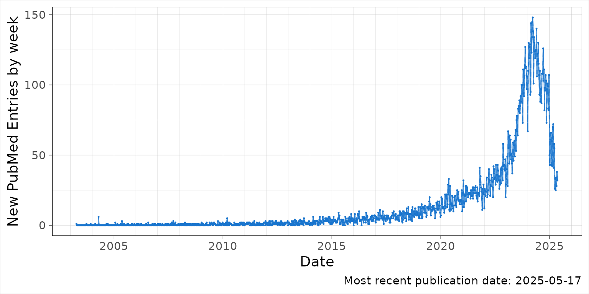

MR publications over time
mr.Rmd
library(PubmedPlot)
library(ggplot2)
library(dplyr)
#>
#> Attaching package: 'dplyr'
#> The following objects are masked from 'package:stats':
#>
#> filter, lag
#> The following objects are masked from 'package:base':
#>
#> intersect, setdiff, setequal, union
library(lubridate)
#>
#> Attaching package: 'lubridate'
#> The following objects are masked from 'package:base':
#>
#> date, intersect, setdiff, union
# a <- PubmedPlot::search_term_by_year('"Mendelian randomisation" [Title] OR "Mendelian randomization" [Title]', 2003:2005)
a <- PubmedPlot::search_term_by_year('"Mendelian randomisation" [tiab] OR "Mendelian randomization" [tiab]', 2003:lubridate::year(Sys.Date()))
#> Searching for year: 2003
#> Search term: "Mendelian randomisation" [tiab] OR "Mendelian randomization" [tiab] AND ("2003/01/01"[dp] : "2003/12/31"[dp])
#> Found 3 articles matching the search term.
#> Fetching records 1 to 3
#> Searching for year: 2004
#> Search term: "Mendelian randomisation" [tiab] OR "Mendelian randomization" [tiab] AND ("2004/01/01"[dp] : "2004/12/31"[dp])
#> Found 9 articles matching the search term.
#> Fetching records 1 to 9
#> Searching for year: 2005
#> Search term: "Mendelian randomisation" [tiab] OR "Mendelian randomization" [tiab] AND ("2005/01/01"[dp] : "2005/12/31"[dp])
#> Found 13 articles matching the search term.
#> Fetching records 1 to 13
#> Searching for year: 2006
#> Search term: "Mendelian randomisation" [tiab] OR "Mendelian randomization" [tiab] AND ("2006/01/01"[dp] : "2006/12/31"[dp])
#> Found 9 articles matching the search term.
#> Fetching records 1 to 9
#> Searching for year: 2007
#> Search term: "Mendelian randomisation" [tiab] OR "Mendelian randomization" [tiab] AND ("2007/01/01"[dp] : "2007/12/31"[dp])
#> Found 15 articles matching the search term.
#> Fetching records 1 to 15
#> Searching for year: 2008
#> Search term: "Mendelian randomisation" [tiab] OR "Mendelian randomization" [tiab] AND ("2008/01/01"[dp] : "2008/12/31"[dp])
#> Found 27 articles matching the search term.
#> Fetching records 1 to 27
#> Searching for year: 2009
#> Search term: "Mendelian randomisation" [tiab] OR "Mendelian randomization" [tiab] AND ("2009/01/01"[dp] : "2009/12/31"[dp])
#> Found 36 articles matching the search term.
#> Fetching records 1 to 36
#> Searching for year: 2010
#> Search term: "Mendelian randomisation" [tiab] OR "Mendelian randomization" [tiab] AND ("2010/01/01"[dp] : "2010/12/31"[dp])
#> Found 43 articles matching the search term.
#> Fetching records 1 to 43
#> Searching for year: 2011
#> Search term: "Mendelian randomisation" [tiab] OR "Mendelian randomization" [tiab] AND ("2011/01/01"[dp] : "2011/12/31"[dp])
#> Found 49 articles matching the search term.
#> Fetching records 1 to 49
#> Searching for year: 2012
#> Search term: "Mendelian randomisation" [tiab] OR "Mendelian randomization" [tiab] AND ("2012/01/01"[dp] : "2012/12/31"[dp])
#> Found 77 articles matching the search term.
#> Fetching records 1 to 77
#> Searching for year: 2013
#> Search term: "Mendelian randomisation" [tiab] OR "Mendelian randomization" [tiab] AND ("2013/01/01"[dp] : "2013/12/31"[dp])
#> Found 111 articles matching the search term.
#> Fetching records 1 to 111
#> Searching for year: 2014
#> Search term: "Mendelian randomisation" [tiab] OR "Mendelian randomization" [tiab] AND ("2014/01/01"[dp] : "2014/12/31"[dp])
#> Found 139 articles matching the search term.
#> Fetching records 1 to 139
#> Searching for year: 2015
#> Search term: "Mendelian randomisation" [tiab] OR "Mendelian randomization" [tiab] AND ("2015/01/01"[dp] : "2015/12/31"[dp])
#> Found 182 articles matching the search term.
#> Fetching records 1 to 182
#> Searching for year: 2016
#> Search term: "Mendelian randomisation" [tiab] OR "Mendelian randomization" [tiab] AND ("2016/01/01"[dp] : "2016/12/31"[dp])
#> Found 236 articles matching the search term.
#> Fetching records 1 to 236
#> Searching for year: 2017
#> Search term: "Mendelian randomisation" [tiab] OR "Mendelian randomization" [tiab] AND ("2017/01/01"[dp] : "2017/12/31"[dp])
#> Found 296 articles matching the search term.
#> Fetching records 1 to 296
#> Searching for year: 2018
#> Search term: "Mendelian randomisation" [tiab] OR "Mendelian randomization" [tiab] AND ("2018/01/01"[dp] : "2018/12/31"[dp])
#> Found 384 articles matching the search term.
#> Fetching records 1 to 384
#> Searching for year: 2019
#> Search term: "Mendelian randomisation" [tiab] OR "Mendelian randomization" [tiab] AND ("2019/01/01"[dp] : "2019/12/31"[dp])
#> Found 547 articles matching the search term.
#> Fetching records 1 to 500
#> Fetching records 501 to 547
#> Searching for year: 2020
#> Search term: "Mendelian randomisation" [tiab] OR "Mendelian randomization" [tiab] AND ("2020/01/01"[dp] : "2020/12/31"[dp])
#> Found 840 articles matching the search term.
#> Fetching records 1 to 500
#> Fetching records 501 to 840
#> Searching for year: 2021
#> Search term: "Mendelian randomisation" [tiab] OR "Mendelian randomization" [tiab] AND ("2021/01/01"[dp] : "2021/12/31"[dp])
#> Found 1228 articles matching the search term.
#> Fetching records 1 to 500
#> Fetching records 501 to 1000
#> Fetching records 1001 to 1228
#> Searching for year: 2022
#> Search term: "Mendelian randomisation" [tiab] OR "Mendelian randomization" [tiab] AND ("2022/01/01"[dp] : "2022/12/31"[dp])
#> Found 1654 articles matching the search term.
#> Fetching records 1 to 500
#> Fetching records 501 to 1000
#> Fetching records 1001 to 1500
#> Fetching records 1501 to 1654
#> Searching for year: 2023
#> Search term: "Mendelian randomisation" [tiab] OR "Mendelian randomization" [tiab] AND ("2023/01/01"[dp] : "2023/12/31"[dp])
#> Found 2979 articles matching the search term.
#> Fetching records 1 to 500
#> Fetching records 501 to 1000
#> Fetching records 1001 to 1500
#> Fetching records 1501 to 2000
#> Fetching records 2001 to 2500
#> Fetching records 2501 to 2979
#> Searching for year: 2024
#> Search term: "Mendelian randomisation" [tiab] OR "Mendelian randomization" [tiab] AND ("2024/01/01"[dp] : "2024/12/31"[dp])
#> Found 6436 articles matching the search term.
#> Fetching records 1 to 500
#> Fetching records 501 to 1000
#> Fetching records 1001 to 1500
#> Fetching records 1501 to 2000
#> Fetching records 2001 to 2500
#> Fetching records 2501 to 3000
#> Fetching records 3001 to 3500
#> Fetching records 3501 to 4000
#> Fetching records 4001 to 4500
#> Fetching records 4501 to 5000
#> Fetching records 5001 to 5500
#> Fetching records 5501 to 6000
#> Fetching records 6001 to 6436
#> Searching for year: 2025
#> Search term: "Mendelian randomisation" [tiab] OR "Mendelian randomization" [tiab] AND ("2025/01/01"[dp] : "2025/12/31"[dp])
#> Found 2865 articles matching the search term.
#> Fetching records 1 to 500
#> Fetching records 501 to 1000
#> Fetching records 1001 to 1500
#> Fetching records 1501 to 2000
#> Fetching records 2001 to 2500
#> Fetching records 2501 to 2865
# write_json(a, "pubmed_abstracts.json", pretty=TRUE)
b <- group_by_time_interval(a)
p <- plot_time_interval(b)
p